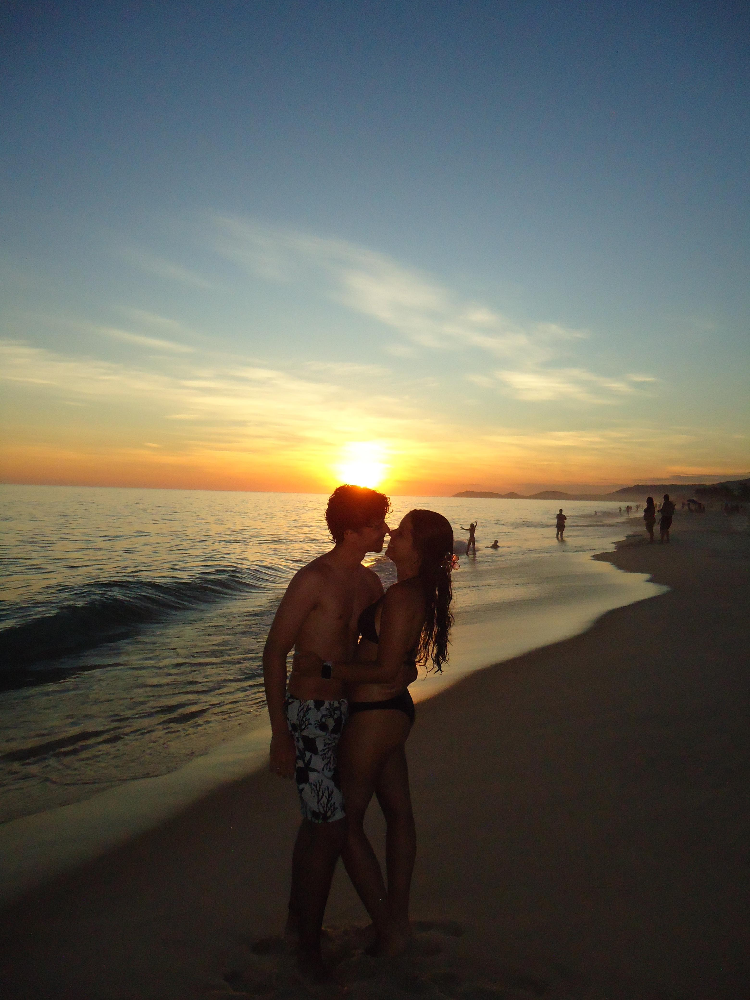
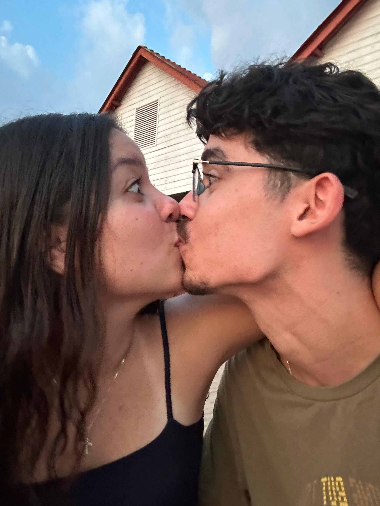
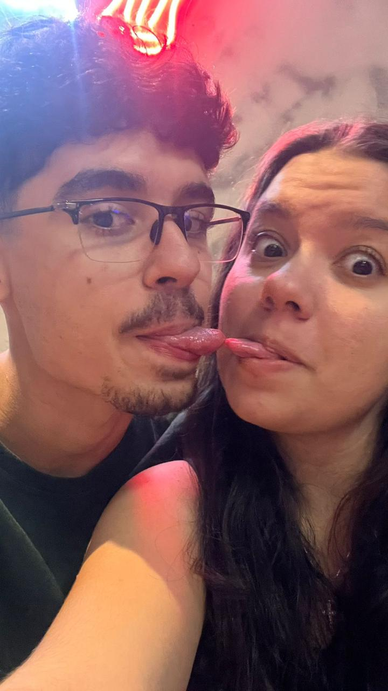
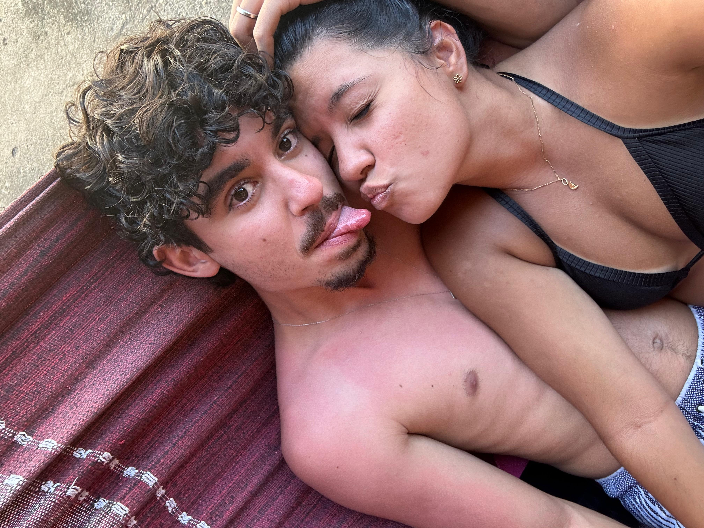
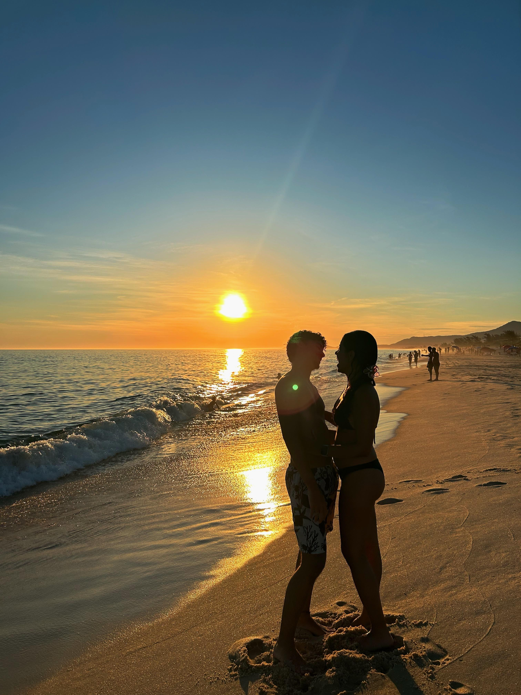

Dia 25/12/25
Tiramos um monte de fotos no pôr do sol e eu amei muito, sempre fico muito feliz quando você se propõe a tirar várias comigo.

Dia 12/10/24
Esse dia foi extremamente especial pra mim, fazia pouco tempo que eu tinha voltado de viagem e faltava pouco tempo pro enem(full ansiosa),fomos ver o pôr do sol, ficamos juntinhos e bestas um com o outro e você me fez esquecer de tudo até de que tinham pessoas em volta da gente, porque te amar é exatamente assim, é como se existisse um mundo perfeito toda vez que estamos um ao lado do outro.

Dia 11/11/24
Esse foi um dos dias mais difíceis pra mim, foi a última vez que nos vimos antes de eu ir embora, você foi fazer suas provas e eu fiquei.A partir desse dia eu fiquei morrendo de medo de talvez nunca mais te ver, mesmo você falando que iria, eu nunca tive ninguém que fosse tão longe por mim assim, então eu tinha muito medo mas nunca deixei de acreditar em nós e no que poderiamos ser. Fico muito feliz em saber que tudo de alguma forma sempre se alinhou pra gente e que hoje, mesmo que pouco, ainda nos vemos e conseguimos ter um ótimo relacionamento.
Eu te amo mais que tudo amor, obrigada por sempre estar aqui por mim e por nós!

Dias 23/12/25
Nesse dia, ficamos em casa e apenas curtimos a piscina(eu tinha tomado remédio pra fazer toto) e foi um ótimo dia tambem, nós rimos, tiramos fotos, fizemos pipoca,CHOPPP DE VINHOOOOOOO e vimos stranger things. Foi um dia deveras incrível, os meus natais/finais de ano tem sido muito mais felizes com você, a vida é muito melhor ao seu lado.

Dia 25/12/25
Por último mas não menos importante, essa fotinha que eu não poderia deixar de fora. Pra mim essa foto não é nada menos que perfeita para resumir nosso relacionamento, feliz(mesmo com alguns desentendimentos, isso tambem faz parte de um relacionamento e da felicidade dele), leve, engraçado e cheio de luz, um sempre está lá pelo outro e tenho certeza de que nunca vai deixar de ser assim.
Eu te tudo pra sempre, nunca amarei menos que isso, você me ensina como a vida pode ser muito mais bonita quando temos alguém com quem compartilhar, me ensina que erramos e que ta tudo bem, que as coisas acontecem, e mais um milhão de coisas que talvez eu nunca fosse aprender sozinha. Eu te amo incondicionalmente Gustavo Basques Ferrão.
